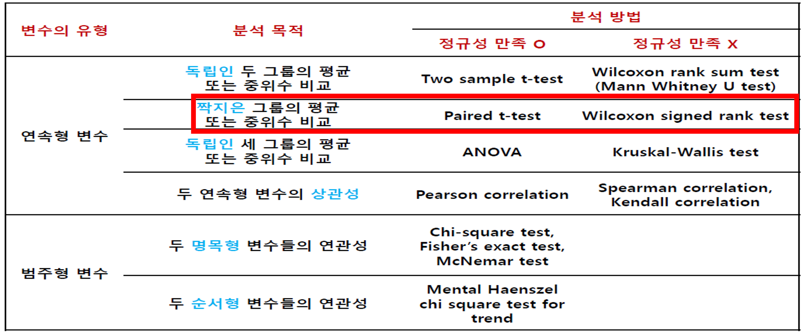
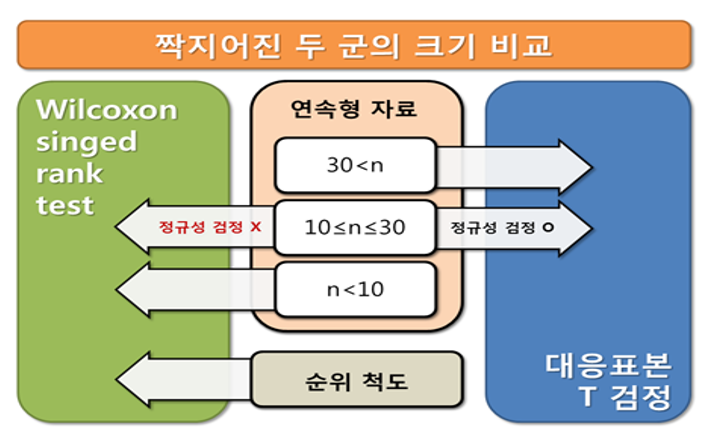
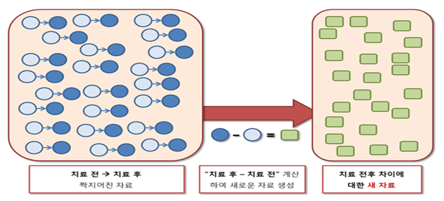
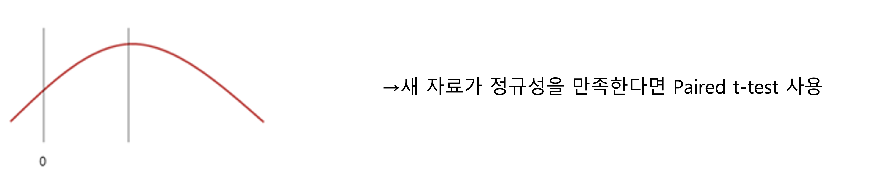
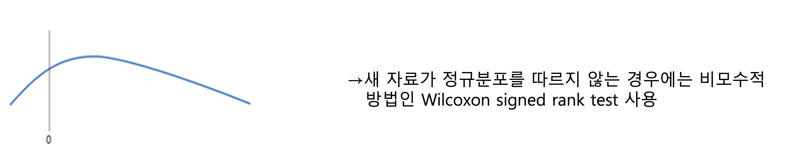
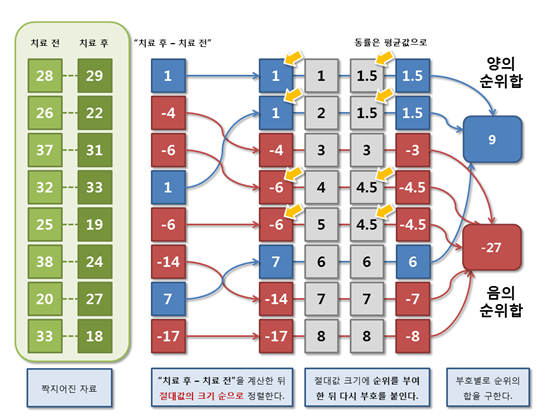
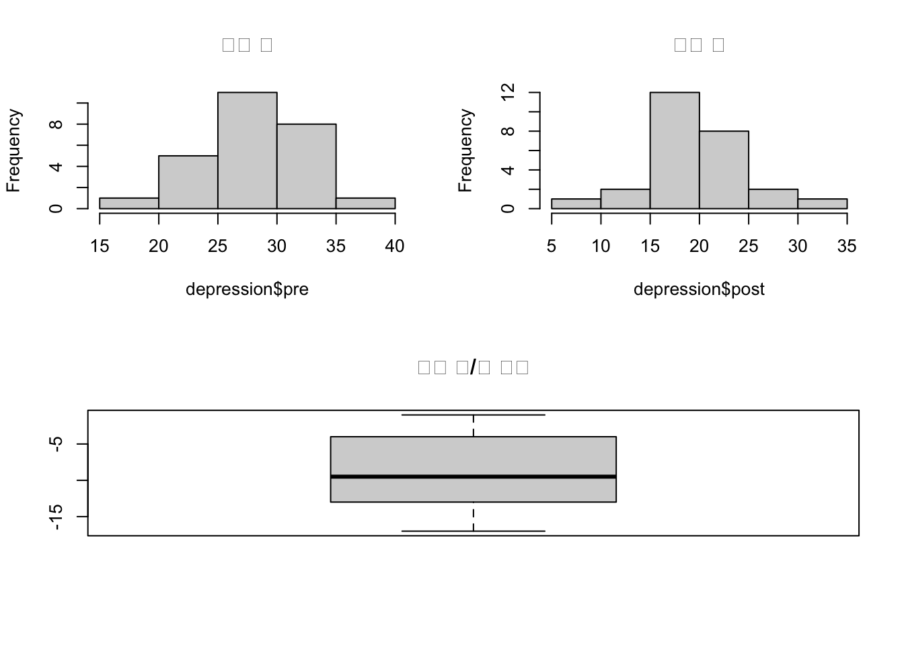
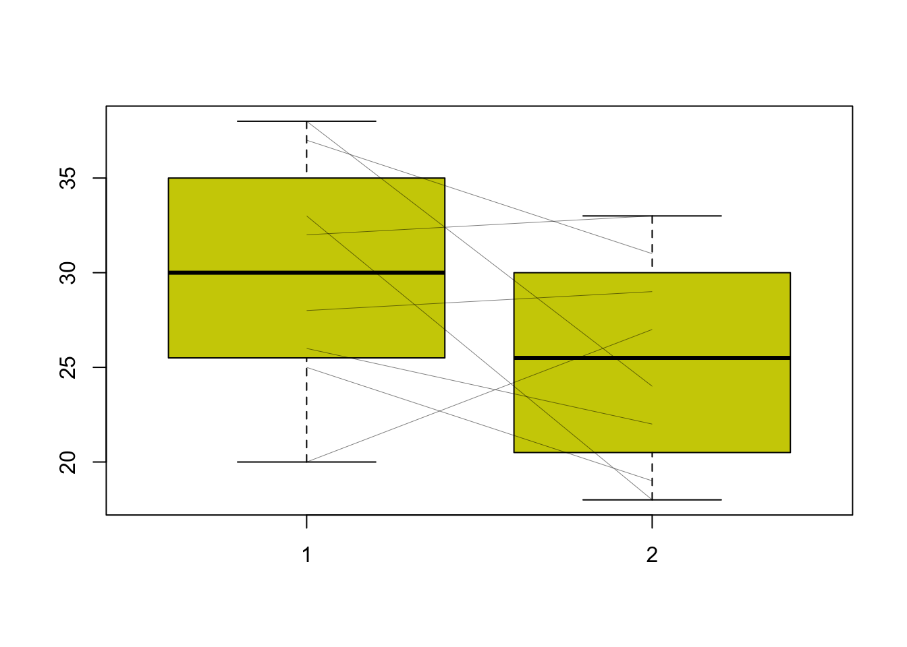

Chapter 3 치료 전과 후의 크기 비교
- 자료의 유형에 따른 분석 방향

- 결과변수가 연속형인 짝지어진 두 군의 크기를 비교할 때 대응표본 T 검정과 Wilcoxon signed rank test 사용

3.1 대응표본 T 검정
- 짝지어진 두 군의 비교 \(\rightarrow\) 두 군은 독립이 아님
- 짝지어진 두 값의 차이를 이용하여 검정
- 정규성(normality)을 만족해야 함
- 집단간 비교가 아니라 한 집단 내에서의 시점 또는 효과에 따른 평균 차이 검정을 하는 것이므로 등분산 검정은 필요하지 않음

- 새 자료(짝지어진 두 값의 차이)가 정규분포를 따를 때

- 새 자료(짝지어진 두 값의 차이)가 정규분포를 따르지 않을 때

[정규성 검정의 귀무가설과 대립가설]
- 귀무가설: 자료는 정규분포를 따른다.
- 대립가설: 자료는 정규분포를 따르지 않는다.
정규성 가정을 확인하기 위해 Shapiro-Wilk와 Kolmogorov-Smirnov test 사용
p-value를 보얐을 때 유의수준 0.05보다 높으면 자료들이 정규분포를 따른다는 귀무가설 채택
대응표본 T 검정(paired t-test)의 가설
- 귀무가설: 치료 전과 후의 차이의 평균은 0이다. (두 변수의 평균은 같다)
- 대립가설: 치료 전과 후의 차이의 평균은 0이 아니다. (두 변수의 평균은 같지 않다.)
귀무가설을 전제로 주어진 자료가 해석될 가능성이 5% 미만인 경우, 즉 p-value가 0.05보다 작을 경우 귀무가설을 기각하고 대립가설을 채택
3.2 Wilcoxon signed rank test
짝지어진 자료의 크기를 비교하는 비모수적 방법은 순위합을 이용하는 Wilcoxon signed rank test 사용
자료의 숫자가 적거나 ‘치료 후-치료 전’ 자료가 정규분포를 따른다고 할 수 없는 경우 비모수적인 방법 사용
검정순서
- 짝지어진 자료 전/후를 계산하여 차이를 구함
- 차이에 절대값을 취한 뒤, 절대값의 크기 순으로 정렬
- 이때 동률은 평균값을 취함
- 절대값 크기에 순위를 부여한 뒤 다시 부호를 붙임
- 부호별로 순위의 합을 구함

- [순위합 검정의 가설]
- 귀무가설: 치료 전과 후의 크기가 같다.
- 대립가설: 치료 전과 후의 크기가 같지 않다.
- 비모수적인 방법은 일반적으로 모수적인 방법보다 검정력이 낮음
- 순위만 비교한 것이기 때문에 치료 전과 후의 크기의 차이를 언급할 수 없는 단점이 있음
3.3 R 예제
다음은 새로운 항우울제의 치료 효과를 증명하기 위한 연구이다. 총 26명의 우울증 환자를 대상으로 항우울제 치료 전/후의 우울증 점수를 측정하였다. 치료 전과 비교하여 새 항우울제 치료 후 우울증 점수가 유의하게 감소하였는지 검정하라.
3.3.1 Paired t-test
3.3.1.1 데이터 불러오기
depression <- read.csv(file="data/3_paired_t_test.csv",header=TRUE)
str(depression)## 'data.frame': 26 obs. of 2 variables:
## $ pre : int 38 26 25 32 28 34 27 33 32 18 ...
## $ post: int 24 22 19 18 24 31 19 18 17 8 ...#View(depression)3.3.1.2 기술통계분석
#psych 패키지로 mean,sd,median 등의 값을 구할 수 있다.
#install.packages("psych")
library(psych)
describe(depression)## vars n mean sd median trimmed mad min max range skew kurtosis se
## pre 1 26 28.73 4.28 28 28.77 4.45 18 38 20 -0.09 -0.06 0.84
## post 2 26 19.81 5.24 19 19.77 4.45 8 31 23 0.02 -0.21 1.03dif <-c(depression$post-depression$pre) #치료 전/후 차이
describe(dif)## vars n mean sd median trimmed mad min max range skew kurtosis se
## X1 1 26 -8.92 4.71 -9.5 -8.95 6.67 -17 -1 16 0.04 -1.36 0.923.3.1.3 그래프그리기(상자그림, 히스토그램)
#디폴트 par값을 미리 할당-->par(opar)
opar <- par(no.readonly=TRUE)
layout(matrix(c(1,2,3,3),2,2, byrow=TRUE)) #화면분할
hist(depression$pre, main = "치료 전")
hist(depression$post, main = "치료 후")
boxplot(dif, main= "치료 전/후 차이")
par(opar)attach(depression)
#boxplot(x): 상자와 수염(box-and-whiskers) 그래프를 표현
#col: 색을 나타냄
boxplot(pre, post, col="yellow3")
#segmets(x0,y0,x1,y1) : (x0,y0) 좌표와 (x1,y1) 좌표 사이를 연결하는 선을 출력한다.
#col은 선의 색깔, lwd는 선의 굵기를 결정한다.
segments(1,pre,2,post,col=1,lwd=0.25)
3.3.1.4 정규성 검정
#n >2000 일 때는 Kolmogorov-Smirnov(KS) test, n<2000 일 때, Shapiro-Wilk(SW) test를 쓰는 경우가 많다.
#shapiro-wilk 검정: p-value >0.05면 귀무가설 채택. 따라서 자료는 정규분포를 따른다고 가정한다
shapiro.test(post-pre)##
## Shapiro-Wilk normality test
##
## data: post - pre
## W = 0.95114, p-value = 0.2466#p-value= 0.2466 따라서 귀무가설 채택. 따라서 모집단의 분포는 정규분포 따른다고 볼 수 있다.3.3.1.5 대응표본 T 검정
#paired: post에서 pre 빼서 계산해준다.차이를 알 수 있다.
#two.sided:같다, 같지 않다.
t.test(depression$post,depression$pre,
alternative = c("two.sided"),
paired=TRUE,
conf.level = 0.95)##
## Paired t-test
##
## data: depression$post and depression$pre
## t = -9.6667, df = 25, p-value = 6.327e-10
## alternative hypothesis: true difference in means is not equal to 0
## 95 percent confidence interval:
## -10.824189 -7.021964
## sample estimates:
## mean of the differences
## -8.923077#p-value<0.001 따라서 귀무가설 기각. 따라서 치료 전후 차이의 평균은 0이 아니다.### 대응표본 T 검정 시행
t.test(post-pre)##
## One Sample t-test
##
## data: post - pre
## t = -9.6667, df = 25, p-value = 6.327e-10
## alternative hypothesis: true mean is not equal to 0
## 95 percent confidence interval:
## -10.824189 -7.021964
## sample estimates:
## mean of x
## -8.923077#p-value<0.001 따라서 귀무가설 기각. 따라서 치료 전후 차이의 평균은 0이 아니다.# 분석이 끝났으니 데이터셋 detach하기
detach(depression)3.3.2 Wilcoxon signed rank test
다음은 새로운 항우울제의 치료 효과를 증명하기 위한 연구이다. 총 26명의 우울증 환자를 대상으로 항우울제 치료 전/후의 우울증 점수를 측정하였다. 치료 전과 비교하여 새 항우울제 치료 후 우울증 점수가 유의하게 감소하였는지 검정하라.
3.3.2.1 데이터 입력
depressiondata2 = read.csv("data/3_wilcoxon_signed_rank_test.csv",header=T)
#자료의 수가 적으므로 비모수적 방법인 wilcoxon signed rank test 사용.
attach(depressiondata2)3.3.2.2 상자 그림
#boxplot(x): 상자와 수염(box-and-whiskers) 그래프를 표현
#col: 색을 나타냄
boxplot(pre, post, col="yellow3")
#segmets(x0,y0,x1,y1) : (x0,y0) 좌표와 (x1,y1) 좌표 사이를 연결하는 선을 출력한다.
#col은 선의 색깔, lwd는 선의 굵기를 결정한다.
segments(1,pre,2,post,col=1,lwd=0.25)
3.3.2.3 Wilcoxon signed rank test
#exact 옵션: 순서대로 나열 시, 같은 값이 존재하면 순서를 정하는데 문제가 생겨 디폴트인 exact test로 p-value를 구하지 못하고 대신 정규 분포에 근사 시켜 p-value를 구한다.
#exact=FALSE를 옵션으로 추가하여 정규분포에 근사시키는 방법을 선택하면 디폴트인 exact test를 시도하지 않으므로 Warning을 없앨 수 있다.
#correct 옵션: 이산형 분포를 연속형인 정규분포 등으로 근사시켜 생기는 오차를 보정해줄 수 있다.
#correct=FALSE를 옵션으로 추가하여 정규분포에 근사 시키는 방법을 선택하지 않으므로 Warning을 없앨 수 있다.
wilcox.test(post - pre, exact = FALSE, correct = FALSE)##
## Wilcoxon signed rank test
##
## data: post - pre
## V = 9, p-value = 0.2065
## alternative hypothesis: true location is not equal to 0#p-value=0.206로 0.05보다 커서 '치료 전과 후의 크기가 같다'는 귀무가설을 기각할 수 없으므로 치료 전과 후의 차이가 있다고 말할 수 없다.
#분석이 끝났으니 데이터셋 detach하기
detach(depressiondata2)